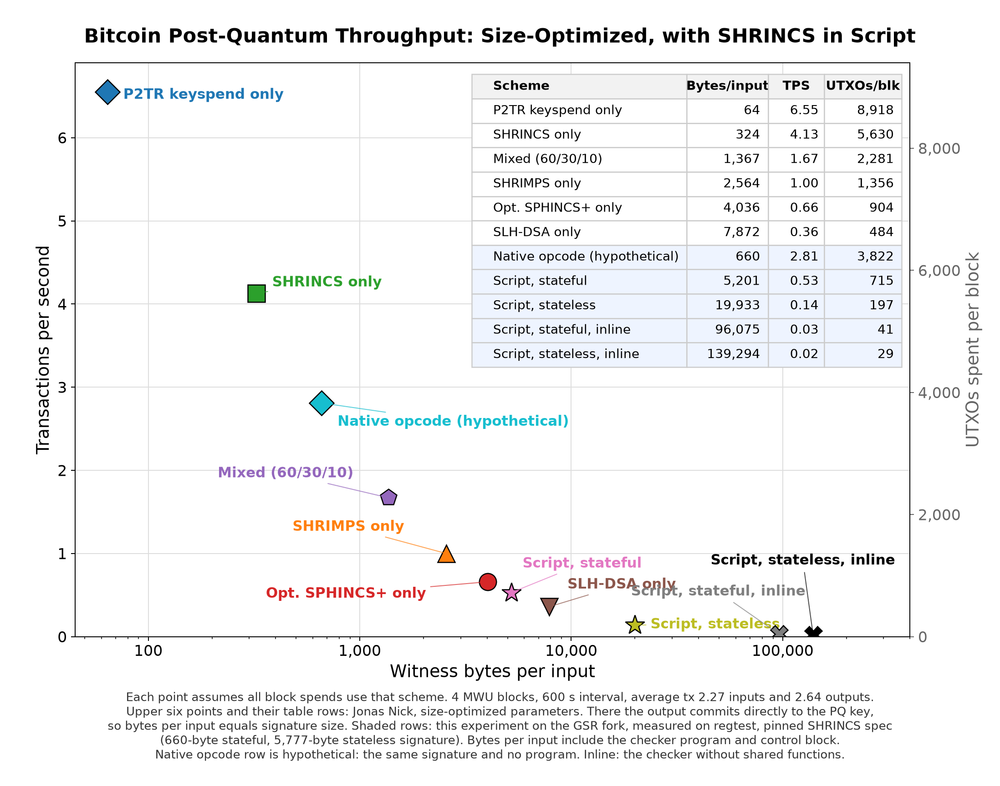

Checking post-quantum signatures in Bitcoin Script
What a SHRINCS spend costs under different sets of Script opcodes, measured on an experimental fork's private test network. Not production software. It does not make any coins quantum-safe.
Simple summary
The question
Bitcoin's signatures break if large quantum computers arrive. SHRINCS is a proposed replacement. It relies only on hash functions, which quantum computers do not break the same way.
Bitcoin would need a way to check these new signatures. There are two options:
- Add a new built-in instruction just for SHRINCS.
- Give Bitcoin Script enough general instructions that anyone can write the checker themselves.
The Script Restoration fork (based on BIP 440 and BIP 441) is option two. So we asked: if we write the SHRINCS checker using only that fork's general instructions, does it work, how big is it, and what does it cost to run?
What we did
- Wrote the checker in Bitcoin Script. It handles both kinds of SHRINCS signature and agrees with the official Python reference on every test, including all 255 tree depths and every kind of tampered input.
- Spent real test coins with it. On a private network running the fork, we locked coins behind the checker and spent them with SHRINCS signatures.
- Measured it. Program size, transaction size, and execution cost, with and without the fork's reusable-function feature.
- Made it repeatable. Anyone with the repository can rebuild everything from scratch and get the same programs and test results.
The four scenarios
SHRINCS is a hash-based signature scheme. Checking one signature means recomputing a few thousand SHA256 hashes in a fixed pattern. The question is what Bitcoin Script would need to do that check, and what a spend costs under each answer.
| Scenario | Opcodes the checker needs beyond today's Bitcoin | Where those opcodes exist |
|---|---|---|
| Today: P2TR key spend | None. A 64-byte Schnorr signature, checked natively. | Bitcoin mainnet. Not quantum-safe. The reference row. |
| A. Restoration only | The byte-string and arithmetic opcodes of BIP 441 under the BIP 440 budget, for the checker. OP_TX, for the spending policy to read the transaction. | BIP 440 and 441 are drafts by Rusty Russell and Julian Moik. OP_TX is in Rusty Russell's 2024 draft and in the fork. |
| B. Restoration + byte reversal | Scenario A plus OP_BYTEREV, which reverses a byte string in one step. | Rusty Russell's 2024 covenant-support draft and the fork. |
| C. Restoration + byte reversal + functions | Scenario B plus OP_DEFINE and OP_INVOKE, which store a piece of code once and run it many times. | Only the fork, added 11 September 2026. No written specification. Known safety problems, listed below. |
| C′. C with the join fix | Scenario C compiled without a wasted empty push at the start of every join. No new opcode. | A compiler fix found while building scenario E. Not yet in the audited compiler. |
| E. C′ + OP_MULTI | Scenario C plus OP_MULTI, which applies one operation to a run-time number of stack items. E uses it everywhere it applies. E′ uses it only for hashing, and only where the cost table makes it cheaper. | Rusty Russell's 2024 covenant-support draft and the fork. A reviewer has already questioned its inclusion. |
| D. Native SHRINCS opcode | One new opcode that checks the whole signature inside the node. | Nowhere. Hypothetical, included to show the floor. |
Scenarios A, B, C, C′, E, and E′ were measured with the same checker compiled six ways. A and C were also mined on the test network. Scenario D is computed from the signature size alone. "Stateful" and "stateless" are the two SHRINCS signature types: the small one a wallet normally uses, and the large fallback for when signing state is lost.
Transaction size and fee
One input, two outputs, one signature. Fees are paid per vbyte, and witness bytes count for a quarter, so the whole-transaction byte count and the vbyte count differ. The fee columns assume the shown rates and nothing else.
Stateful signature, 660 bytes
- Measured
- Reference or hypothetical
Show as table
| Scenario | Signature | Program | Control block | Whole tx, bytes | Weight | vbytes | Fee at 1 sat/vB | Fee at 10 sat/vB |
|---|---|---|---|---|---|---|---|---|
| Today: P2TR key spend | 64 | none | none | 181 | 520 | 130 | 130 sat | 1,300 sat |
| A. Restoration only | 660 | 95,350 | 65 | 96,200 | 96,539 | 24,135 | 24,135 sat | 241,350 sat |
| B. Restoration + byte reversal | 660 | 52,179 | 65 | 53,027 | 53,366 | 13,342 | 13,342 sat | 133,420 sat |
| C. Restoration + byte reversal + functions | 660 | 4,476 | 65 | 5,324 | 5,663 | 1,416 | 1,416 sat | 14,160 sat |
| C′. C with the join fix | 660 | 4,130 | 65 | 4,978 | 5,317 | 1,330 | 1,330 sat | 13,300 sat |
| E. C′ + OP_MULTI everywhere | 660 | 4,064 | 65 | 4,912 | 5,251 | 1,313 | 1,313 sat | 13,130 sat |
| E′. C′ + OP_MULTI where it is cheaper | 660 | 4,124 | 65 | 4,972 | 5,311 | 1,328 | 1,328 sat | 13,280 sat |
| D. Native SHRINCS opcode (hypothetical) | 660 | none | none | 779 | 1,118 | 280 | 280 sat | 2,800 sat |
Stateless signature, 5,777 bytes
- Measured
- Reference or hypothetical
Show as table
| Scenario | Signature | Program | Control block | Whole tx, bytes | Weight | vbytes | Fee at 1 sat/vB | Fee at 10 sat/vB |
|---|---|---|---|---|---|---|---|---|
| Today: P2TR key spend | 64 | none | none | 181 | 520 | 130 | 130 sat | 1,300 sat |
| A. Restoration only | 5,777 | 133,452 | 65 | 139,419 | 139,758 | 34,940 | 34,940 sat | 349,400 sat |
| B. Restoration + byte reversal | 5,777 | 120,748 | 65 | 126,715 | 127,054 | 31,764 | 31,764 sat | 317,640 sat |
| C. Restoration + byte reversal + functions | 5,777 | 14,091 | 65 | 20,056 | 20,395 | 5,099 | 5,099 sat | 50,990 sat |
| C′. C with the join fix | 5,777 | 12,913 | 65 | 18,878 | 19,217 | 4,805 | 4,805 sat | 48,050 sat |
| E. C′ + OP_MULTI everywhere | 5,777 | 12,661 | 65 | 18,626 | 18,965 | 4,742 | 4,742 sat | 47,420 sat |
| E′. C′ + OP_MULTI where it is cheaper | 5,777 | 12,867 | 65 | 18,832 | 19,171 | 4,793 | 4,793 sat | 47,930 sat |
| D. Native SHRINCS opcode (hypothetical) | 5,777 | none | none | 5,896 | 6,235 | 1,559 | 1,559 sat | 15,590 sat |
Reading the two charts: under scenario A the checker program is 95,350 bytes and the spend costs 24,135 vbytes, about 186 ordinary payments. Byte reversal alone cuts the program almost in half. Functions cut it by a further factor of twelve, to 1,416 vbytes, about 11 ordinary payments. The join fix takes 86 vbytes more off. A native opcode would bring it to 280 vbytes, about twice an ordinary payment. For the stateless type the signature itself is 5,777 bytes, so even a native opcode leaves the spend at 1,559 vbytes.
Execution cost
The fork gives every transaction an execution allowance of 10,000 units per weight unit and charges each opcode a fixed price plus data-dependent extras. A spend that exceeds its allowance is invalid. Interpreter time is the median of 7 runs on one machine with counters off; it is indicative, not a benchmark.
One caution for reading across rows. Each program signs its own transaction, because the script is part of the signed message, and a different message changes how much hash-chain work the signature needs. So the charged units in these two tables include signature-to-signature variation of a few percent. The matched-input tables further down remove that variation.
Stateful
| Scenario | Charged units | Allowance | Share used | Interpreter time | Opcodes executed | SHA256 calls | Function calls | Peak memory | Largest item |
|---|---|---|---|---|---|---|---|---|---|
| A. Restoration only | 24,150,510 | 965,390,000 | 2.5% | 1.26 ms | 16,357 | 253 | 0 | 3,624 B | 660 B |
| B. Restoration + byte reversal | 22,761,377 | 533,660,000 | 4.3% | 0.93 ms | 15,335 | 253 | 0 | 3,624 B | 660 B |
| C. Restoration + byte reversal + functions | 20,577,528 | 56,630,000 | 36.3% | 0.64 ms | 13,701 | 253 | 62 | 7,971 B | 2,672 B |
| C′. C with the join fix | 18,838,994 | 53,170,000 | 35.4% | 0.63 ms | 12,387 | 253 | 62 | 7,627 B | 2,410 B |
| E. C′ + OP_MULTI everywhere | 19,143,887 | 52,510,000 | 36.5% | 0.64 ms | 11,884 | 253 | 62 | 7,570 B | 2,398 B |
| E′. C′ + OP_MULTI where it is cheaper | 18,837,884 | 53,110,000 | 35.5% | 0.64 ms | 12,379 | 253 | 62 | 7,621 B | 2,404 B |
Stateless
| Scenario | Charged units | Allowance | Share used | Interpreter time | Opcodes executed | SHA256 calls | Function calls | Peak memory | Largest item |
|---|---|---|---|---|---|---|---|---|---|
| A. Restoration only | 130,347,114 | 1,397,580,000 | 9.3% | 3.48 ms | 87,304 | 1,439 | 0 | 17,876 B | 5,777 B |
| B. Restoration + byte reversal | 119,112,473 | 1,270,540,000 | 9.4% | 3.27 ms | 78,733 | 1,514 | 0 | 17,876 B | 5,777 B |
| C. Restoration + byte reversal + functions | 119,995,961 | 203,950,000 | 58.8% | 3.14 ms | 78,562 | 1,469 | 357 | 31,665 B | 7,411 B |
| C′. C with the join fix | 112,114,253 | 192,170,000 | 58.3% | 2.99 ms | 72,194 | 1,574 | 357 | 30,490 B | 6,807 B |
| E. C′ + OP_MULTI everywhere | 120,942,956 | 189,650,000 | 63.8% | 3.11 ms | 72,749 | 1,829 | 357 | 30,240 B | 6,629 B |
| E′. C′ + OP_MULTI where it is cheaper | 112,898,411 | 191,710,000 | 58.9% | 2.98 ms | 72,600 | 1,604 | 357 | 30,444 B | 6,764 B |
Three things stand out. The charged work barely changes across A, B, and C: functions and byte reversal compress the program, not the computation. The share of the allowance rises from 2.5% to 36.3% for the stateful spend not because C does more work but because a smaller transaction gets a smaller allowance. And the stateless spend under C uses 59% of its allowance, which leaves little room for anything else in the same transaction.
- Fixed charge per instruction, 90%
- Data-dependent: hashing, copying, arithmetic, 10%
- Function body copying, 0.3%
Nine tenths of the charge is the fixed price of instructions, most of them stack shuffling: PICK, CAT, DROP, small pushes, IF and ENDIF. The SHA256 hashing is under a tenth. The cost model prices this checker as bookkeeping, not cryptography. Programs with a lot of skipped code, as in scenario A, also run slower per charged unit than the model predicts, because parsing skipped code is not charged. Both points bear on any recalibration of the fork's prices.
What OP_MULTI changes
OP_MULTI applies one operation to a run-time number of stack items: push the items, push the count, then OP_MULTI OP_SHA256 hashes them all as one message. The checker builds every hash input by joining parts, so this is where the opcode would help if it helped anywhere.
Building the scenario exposed something else. The audited compiler starts every join from an empty push, which costs two extra opcodes per join. Fixing that needs no new opcode, and it is scenario C′. Scenario E then adds OP_MULTI everywhere it applies. Scenario E′ adds it only for hashing, and only where the cost table says it is cheaper.
These tables use one public test signature per signature type and run every program on it, so the signature bytes are identical across rows and only the program differs. That is the fair comparison; the transaction tables above cannot give it, because each program there signs a different message.
Matched input, stateful
| Program | Program bytes | Charged units | Change from C | Fixed charge | SHA256 calls | OP_MULTI uses |
|---|---|---|---|---|---|---|
| A. Restoration only | 95,209 | 23,029,889 | +17.2% | 21,127,000 | 248 | 0 |
| B. Restoration + byte reversal | 52,038 | 22,226,377 | +13.1% | 20,330,500 | 248 | 0 |
| C. Restoration + byte reversal + functions | 4,335 | 19,645,115 | 17,673,750 | 248 | 0 | |
| C′. C with the join fix | 3,989 | 17,957,817 | -8.6% | 16,081,250 | 248 | 0 |
| E. C′ + OP_MULTI everywhere | 3,923 | 18,241,221 | -7.1% | 16,502,500 | 248 | 68 |
| E′. C′ + OP_MULTI where it is cheaper | 3,983 | 17,956,698 | -8.6% | 16,083,750 | 248 | 2 |
Matched input, stateless
| Program | Program bytes | Charged units | Change from C | Fixed charge | SHA256 calls | OP_MULTI uses |
|---|---|---|---|---|---|---|
| A. Restoration only | 133,311 | 133,585,802 | +9.2% | 119,801,750 | 1,543 | 0 |
| B. Restoration + byte reversal | 120,607 | 119,995,084 | -1.9% | 106,294,250 | 1,543 | 0 |
| C. Restoration + byte reversal + functions | 13,950 | 122,293,006 | 108,187,250 | 1,543 | 0 | |
| C′. C with the join fix | 12,772 | 111,270,250 | -9.0% | 97,752,250 | 1,543 | 0 |
| E. C′ + OP_MULTI everywhere | 12,520 | 113,227,624 | -7.4% | 100,567,250 | 1,543 | 247 |
| E′. C′ + OP_MULTI where it is cheaper | 12,726 | 111,269,830 | -9.0% | 97,772,250 | 1,543 | 12 |
The join fix removes 8.0% of the stateful program bytes and 8.6% of its charged cost; 8.4% and 9.0% for the stateless type. OP_MULTI everywhere then removes a further 1.7% of bytes but adds 1.6% to the charged cost, 1.8% for the stateless type. OP_MULTI where it is cheaper changes the charged cost by -1,119 and -420 units, from 2 and 12 uses.
The reason is in the cost table. The OP_MULTI byte itself is free, but its count is an ordinary push and pays the fixed 1,250, and the opcode then charges the target's fixed price once per logical operation. Against that, a chain of CATs pays 3 units per byte of every intermediate result. So hashing with OP_MULTI wins once the intermediate bytes of a join exceed about 422, after the count's own push and decoding: three 200-byte parts already cross that line, at 40,630 units against 42,364 on the pinned evaluator. The 16-byte hashes that dominate this checker do not come close, and the few large joins it has, 12 in the stateless program, are too few to matter. OP_MULTI applied to joins that are not hashed, or to cleanups, always pays the count push for nothing under this table.
So the result is specific: a hash-based signature verifier, whose joins are short, does not gain from OP_MULTI. A program that hashes long lists of large items would. All extended programs pass the same 406 acceptance and rejection checks as scenario C.
Throughput
If every transaction on the network used one scenario, how many would fit per second? Same method and assumptions as Jonas Nick's chart: 4,000,000 weight units per block, one block per 600 seconds, an average transaction with 2.27 inputs and 2.64 outputs. The P2TR row reproduces his figure. These are capacity estimates from size, not measured network throughput.
{kind=link}

Show as table
| Scenario | Witness bytes per input | Tx per second | Tx per block |
|---|---|---|---|
| Today: P2TR key spend | 64 | 6.55 | 3,929 |
| A. Restoration only, stateful | 96,075 | 0.03 | 18 |
| B. Restoration + byte reversal, stateful | 52,904 | 0.06 | 33 |
| C. Restoration + byte reversal + functions, stateful | 5,201 | 0.53 | 315 |
| C′. C with the join fix, stateful | 4,855 | 0.56 | 336 |
| E. C′ + OP_MULTI everywhere, stateful | 4,789 | 0.57 | 340 |
| E′. C′ + OP_MULTI where it is cheaper, stateful | 4,849 | 0.56 | 336 |
| D. Native SHRINCS opcode (hypothetical), stateful | 660 | 2.81 | 1,684 |
| A. Restoration only, stateless | 139,294 | 0.02 | 13 |
| B. Restoration + byte reversal, stateless | 126,590 | 0.02 | 14 |
| C. Restoration + byte reversal + functions, stateless | 19,933 | 0.14 | 87 |
| C′. C with the join fix, stateless | 18,755 | 0.15 | 92 |
| E. C′ + OP_MULTI everywhere, stateless | 18,503 | 0.16 | 93 |
| E′. C′ + OP_MULTI where it is cheaper, stateless | 18,709 | 0.15 | 92 |
| D. Native SHRINCS opcode (hypothetical), stateless | 5,777 | 0.48 | 286 |
His SHRINCS point sits at 4.13 because it uses a 324-byte signature from a different parameter set. Ours is 660 bytes from the pinned specification. The gap between scenario C and scenario D, about five times, is the cost of checking in Script instead of in the node. The gap between A and C, about seventeen times, is what the fork's two extra opcode groups buy.
Feasibility
| Question | A. Restoration only | B. + byte reversal | C. + functions | E. + OP_MULTI | D. Native opcode |
|---|---|---|---|---|---|
| Fits the fork's consensus limits? (4 MB per item, 8 MB stack, 4 MB of executed function bodies, execution allowance) | Yes, all types | Yes, all types | Yes, all types | Yes, all types | Not applicable |
| Standard under the fork's relay policy? (400,000 weight units; leaf 0xc2 has no witness-item size limit) | Yes, mined on regtest | Yes by the same limits, not spent on a node | Yes, mined on regtest | Yes by the same limits, not spent on a node | Not applicable |
| Standard under Bitcoin Core's policy today? | No. Core limits tapscript witness items to 80 bytes. Every signature here is larger. The fork exempts its new leaf version from that rule. | Would need its own rule | |||
| Share of execution allowance, stateful / stateless | 3% / 9% | 4% / 9% | 36% / 59% | 36% / 64% | None |
| Fee at 10 sat/vB, stateful / stateless | 241,350 / 349,400 sat | 133,420 / 317,640 sat | 14,160 / 50,990 sat | 13,130 / 47,420 sat | 2,800 / 15,590 sat |
| Specification status | Draft BIPs | 2024 draft text | None. Code only. | 2024 draft text; inclusion questioned in review | None |
| Open problems | Program size. Cost model undercharges skipped code. | As A, halved | Function bodies can come from the witness. A reserved opcode inside a body makes the spend succeed. No call frames. See the design note. | As C. Raises charged cost here; saves under 2% of bytes. | Consensus change per scheme |
Three things apply to every scenario. The output is ordinary Taproot, so its key path remains vulnerable to a quantum computer; a SHRINCS leaf alone does not protect the coins. There is no wallet, no signer state management, and no security proof; the scheme's own specification lists its proof as unfinished. And the numbers come from one experimental fork whose cost table is being recalibrated, so the execution costs will move; the sizes will not.
What was not done
- No comparison with Simplicity. Simplicity is a rival approach, and a recent post put its SHRINCS checker at about 50 kilobytes. The existing Simplicity implementation uses different SHRINCS parameters, so its size cannot be compared with ours yet. Someone has to build both to the same spec first.
- The coins are not quantum-safe. Our outputs use ordinary Taproot, which keeps an old-style key path. Removing that path is a separate consensus change.
- No wallet, no signer, no security proof. This is a checker, running in a lab.
The numbers behind the charts
One row per program in the mined transactions, from reports/multi-scenario.json 253d472623c96e2f, reports/costs.json 1b8e7a5ba4c9fa36. "Shared" is scenario C, "inline" is scenario A. Executed opcodes and calls are for one spend. The fixed charge is the sum of each executed opcode's fixed price.
| Program | Script bytes | Of which function bodies | Executed opcodes | Function calls | SHA256 calls | Fixed charge | Charged units | Fixed share | Budget used |
|---|---|---|---|---|---|---|---|---|---|
| Stateful, shared | 4,476 | 4,147 | 13,701 | 62 | 253 | 18,542,750 | 20,577,516 | 90% | 36.3% |
| Stateful, inline | 95,350 | 0 | 16,357 | 0 | 253 | 22,182,250 | 24,150,510 | 92% | 2.5% |
| Stateless, shared | 14,091 | 13,790 | 80,662 | 357 | 1,574 | 108,982,500 | 123,292,103 | 88% | 60.5% |
| Stateless, inline | 133,452 | 0 | 91,204 | 0 | 1,634 | 122,097,000 | 136,472,394 | 89% | 9.8% |
| Unified, shared | 17,755 | 17,386 | 13,720 | 62 | 253 | 18,566,500 | 20,643,003 | 90% | 10.9% |
| Unified, inline | 228,549 | 0 | 24,767 | 0 | 253 | 32,694,750 | 34,665,030 | 94% | 1.5% |
Every opcode executed by the mined stateful spend, with and without shared functions, sorted by how often it runs. The last two columns multiply the count by the opcode's fixed price.
Show all 51 opcodes
| Opcode | Count, with functions | Count, without | Fixed price | Fixed charge, with | Fixed charge, without |
|---|---|---|---|---|---|
| OP_PICK | 2,104 | 2,257 | 1,250 | 2,630,000 | 2,821,250 |
| OP_CAT | 1,657 | 1,881 | 1,250 | 2,071,250 | 2,351,250 |
| OP_0 | 848 | 939 | 1,250 | 1,060,000 | 1,173,750 |
| OP_1 | 789 | 884 | 1,250 | 986,250 | 1,105,000 |
| OP_DROP | 892 | 752 | 1,250 | 1,115,000 | 940,000 |
| OP_3 | 806 | 837 | 1,250 | 1,007,500 | 1,046,250 |
| OP_ELSE | 500 | 990 | 1,250 | 625,000 | 1,237,500 |
| OP_ENDIF | 500 | 990 | 1,250 | 625,000 | 1,237,500 |
| OP_IF | 500 | 990 | 1,250 | 625,000 | 1,237,500 |
| push 1 to 75 bytes | 493 | 785 | 1,250 | 616,250 | 981,250 |
| OP_2 | 523 | 488 | 1,250 | 653,750 | 610,000 |
| OP_LESSTHANOREQUAL | 481 | 481 | 3,000 | 1,443,000 | 1,443,000 |
| OP_ROLL | 460 | 440 | 1,250 | 575,000 | 550,000 |
| OP_16 | 431 | 420 | 1,250 | 538,750 | 525,000 |
| OP_4 | 367 | 355 | 1,250 | 458,750 | 443,750 |
| OP_LEFT | 299 | 355 | 1,250 | 373,750 | 443,750 |
| OP_SHA256 | 253 | 253 | 1,250 | 316,250 | 316,250 |
| OP_9 | 71 | 325 | 1,250 | 88,750 | 406,250 |
| OP_SUBSTR | 125 | 225 | 1,250 | 156,250 | 281,250 |
| OP_LESSTHAN | 48 | 291 | 3,000 | 144,000 | 873,000 |
| OP_8 | 125 | 178 | 1,250 | 156,250 | 222,500 |
| OP_VERIFY | 144 | 144 | 1,250 | 180,000 | 180,000 |
| OP_5 | 159 | 73 | 1,250 | 198,750 | 91,250 |
| OP_NUMEQUAL | 105 | 105 | 3,000 | 315,000 | 315,000 |
| OP_SIZE | 104 | 104 | 1,250 | 130,000 | 130,000 |
| OP_SWAP | 104 | 104 | 1,250 | 130,000 | 130,000 |
| OP_7 | 81 | 98 | 1,250 | 101,250 | 122,500 |
| OP_6 | 94 | 57 | 1,250 | 117,500 | 71,250 |
| OP_11 | 41 | 103 | 1,250 | 51,250 | 128,750 |
| OP_RSHIFT | 31 | 88 | 3,000 | 93,000 | 264,000 |
| OP_ADD | 52 | 61 | 1,250 | 65,000 | 76,250 |
| OP_FROMALTSTACK | 63 | 43 | 1,250 | 78,750 | 53,750 |
| OP_TOALTSTACK | 63 | 43 | 1,250 | 78,750 | 53,750 |
| OP_10 | 38 | 44 | 1,250 | 47,500 | 55,000 |
| OP_12 | 42 | 39 | 1,250 | 52,500 | 48,750 |
| OP_14 | 37 | 38 | 1,250 | 46,250 | 47,500 |
| OP_13 | 35 | 36 | 1,250 | 43,750 | 45,000 |
| OP_INVOKE | 62 | 0 | 4,000 | 248,000 | 0 |
| OP_BYTEREV | 49 | 0 | 1,250 | 61,250 | 0 |
| OP_MOD | 24 | 24 | 3,000 | 72,000 | 72,000 |
| OP_MIN | 26 | 2 | 1,250 | 32,500 | 2,500 |
| OP_15 | 4 | 21 | 1,250 | 5,000 | 26,250 |
| OP_MUL | 21 | 1 | 3,000 | 63,000 | 3,000 |
| OP_SUB | 16 | 2 | 1,250 | 20,000 | 2,500 |
| OP_DEFINE | 13 | 0 | 1,250 | 16,250 | 0 |
| OP_PUSHDATA | 10 | 0 | 1,250 | 12,500 | 0 |
| OP_TX | 5 | 5 | 1,250 | 6,250 | 6,250 |
| OP_EQUAL | 3 | 3 | 1,250 | 3,750 | 3,750 |
| OP_DEPTH | 1 | 1 | 1,250 | 1,250 | 1,250 |
| OP_DIV | 1 | 1 | 3,000 | 3,000 | 3,000 |
| OP_LSHIFT | 1 | 1 | 3,000 | 3,000 | 3,000 |
| Total | 13,701 | 16,357 | 18,542,750 | 22,182,250 |
Check it yourself
Everything is in the repository, which is private for now. Its README has a reading guide. The code, the test inputs, the mined transactions, and the measurements are all there, and a clean build on GitHub reproduces the programs and test results byte for byte. This page is generated from the committed reports by docs/build_page.py; the scenario tables come from reports/multi-scenario.json, which the follow-up audit re-derives and re-executes.
Built from reports/multi-scenario.json 253d472623c96e2f, reports/costs.json 1b8e7a5ba4c9fa36. Sources: SHRINCS specification, the fork, BIP 440, BIP 441, Rusty Russell's 2024 draft, Jonas Nick's throughput script.